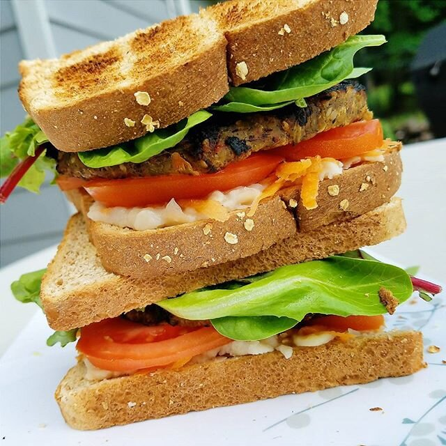
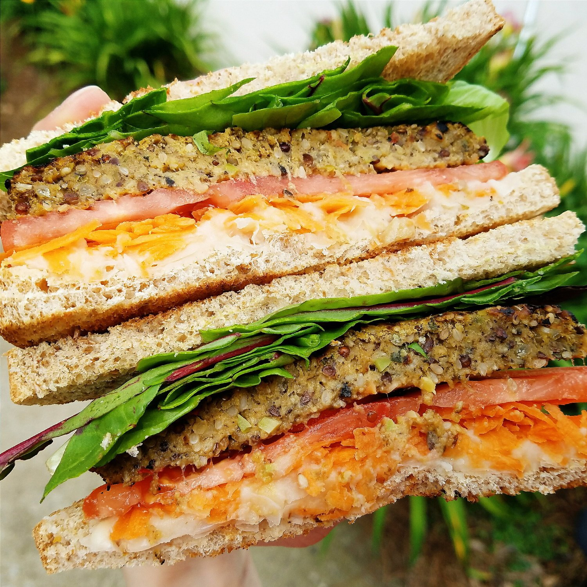
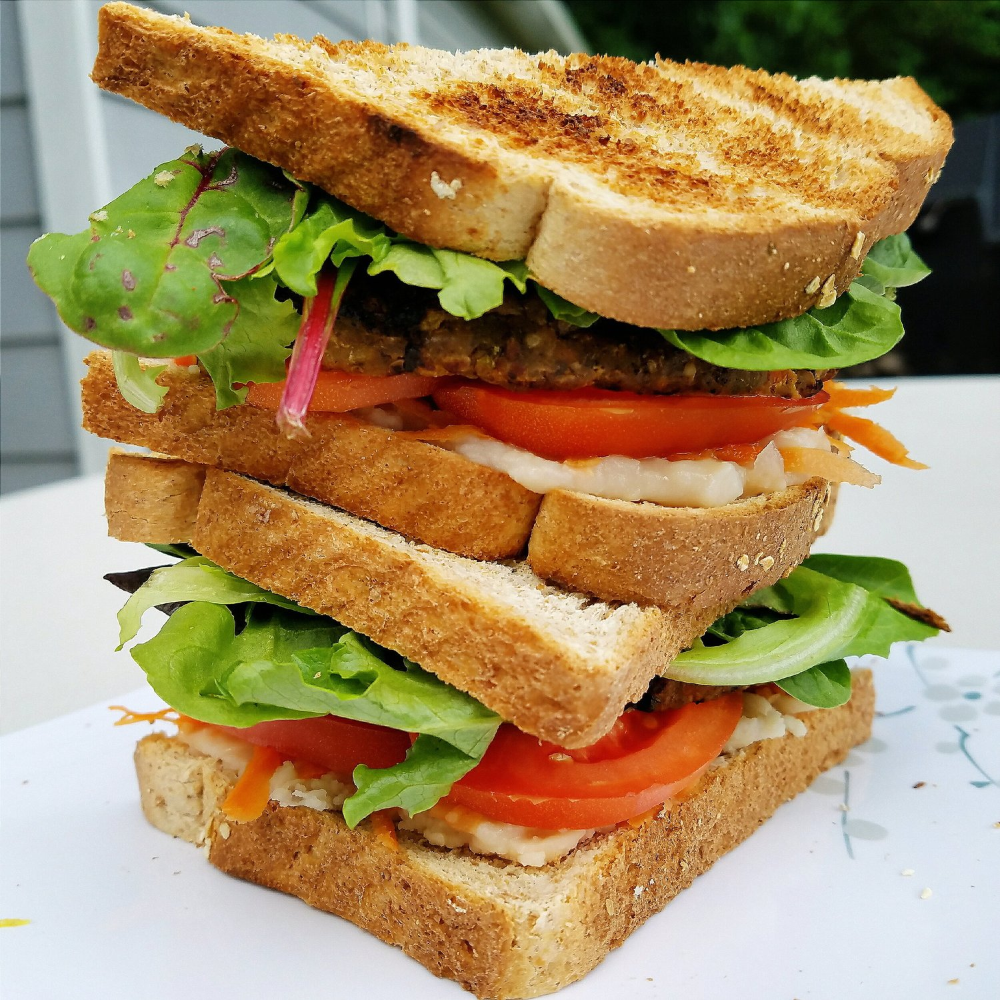

Teriyaki Veggie Burger Sandwich (vegan, gluten free)



I has a sammich. A teriyaki veggie burger sandwich! If you're needing some sandwich inspiration to switch things up, you've come to the right place! This is soo filling, flavorful, vegan, and even gluten free!
Serious question - diagonal or middle cut?? I'm deff pro diagonal but for a minute I almost cut this down the center. Luckily I stopped myself and remembered the right path in life. I guess that goes to show just how long it's been since I've had a sandwich! I usually go with toast, so it's like..sandwich? what? what is it and how do I do it? I'm just not creative enough lately for sandwiches, but man I'm glad I thought to make this with extra veggies I had! Not only did it help me use them up, but it was delicious in the process!!I made this sandwich after one of my long bike rides, and it hit the right spot! I wasn't sure if I'd have the appetite, but I sure did. It's weird but a lot of times I don't really have an appetite after rides, or even during that day at all, I just eat the same as normal. But on my rest days, GOOD LORD STAND CLEAR I want to eat EVERYTHING. And I shoooo do. Funny how that works.
So are you ready for part 2 of the big bike dilemma? My answer to my relocation bike problem is...virtual biking! This was enough of an issue to me that I invested $400 into stuff for virtual biking from my apartment. First, I got a bike trainer (CycleOps Fluid2) which allows me to set up my bike to ride stationary, but still have resistance to the back wheel. REI was having a special 20% off sale so I hit that place up SO FAST to get the trainer I've been on the fence for for months now. "But...Kim...biking stationary is so boring, is it not?" Yes, you're very 100% correct. If I had to ride stationary daily, just kill me. BUT, I discovered this awesome thing called Zwift. It's a software you can get on the computer which has online maps and routes that allows you to race or just ride casually with others all over the world. You see their avatars in real time and race! How cool is that? I just had to get a speed/cadence sensor for my bike and an ANT+ dongle to plug into the computer that transmits the speed and cadence to the software. It...is amazing. I was worried that it would be a joke and not really be good training...but I was wrong. This software is kicking my butt!! I've ridden twice now and it's amazing for training. Even better, it hooks up with Strava (if you run, swim, or bike you might use this - add me!!), so you can see your power, speed, segment ranks, etc. I'm in love.
Not only does it allow me to bike indoors without dealing with crazy Atlanta traffic, but I don't have to add an hour of commute to my day. AND I get to stay home with Pesto! I hate to be away from him all day (I take him to a babysitter during work) and then leave at night to go ride :( so I'm happy to have that time with him! I will still probably do local outdoor group rides on the weekends, but weekday rush-hour traffic is too much. It would be nice to meet local people, but I will also try to arrange with my old friends for some weekend rides because I wub dem. :3
Give this sandwich a go next time you're making lunch! I really love the veggie burger itself, the star of the show! Although, the beans are pretty fantastic in a sandwich too. I'm awful at choosing favorites.
Teriyaki Veggie Burger Sandwich
-
2 slices bread of choice (make sure gluten free if needed!)
-
1/2 cup white beans
-
2-3 TBSP shredded carrots
-
1 roma tomato, sliced
-
1 teriyaki veggie patty (brand is sweet earth foods, it's in Target!)
-
salad greens
First, toast your bread! Not necessary, but personally I think it makes the world a difference for a sandwich. Mash your white beans and spread them on one piece of bread. Add your shredded carrots, sliced tomato, teriyaki veggie patty, and salad greens! Slice and enjoy.